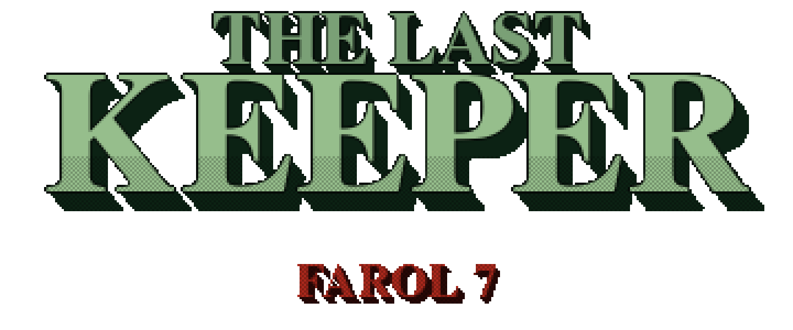
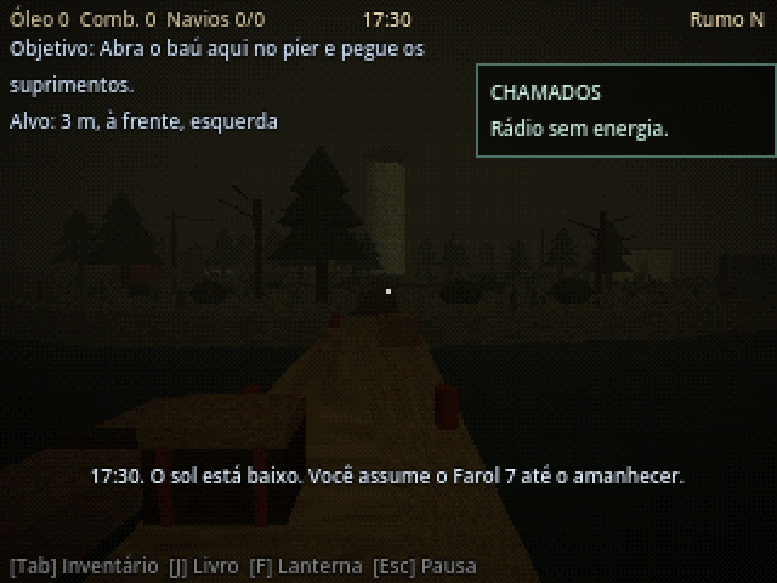
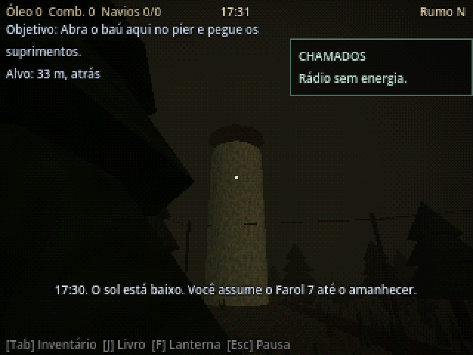
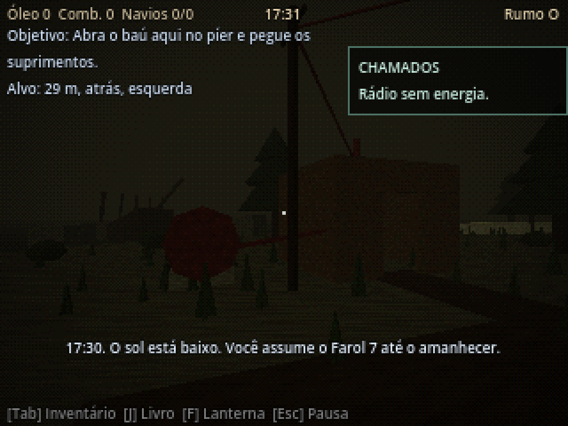

Farol 7 · 17:30 → 06:00
"Sem energia não há rádio. Sem luz, os navios encalham."
Você é o último vigia do Farol 7. Do fim da tarde ao amanhecer, mantenha a luz acesa, o gerador vivo e o rádio ligado. Os navios confiam em você. Nem tudo o que chama pelo rádio diz a verdade.

Não há nome para a ilha nos mapas. A Marinha a chamou de Ponto 7: um dente de rocha onde a corrente empurra os navios para dentro, e onde um farol foi erguido em 1891 não para guiar, mas para avisar. Aqui não.
Desde então, oito vigias foram enterrados no platô, junto aos náufragos do Esperança e do Imperatriz. O nono desapareceu na noite em que o cargueiro Santa Aurora chamou pelo rádio com uma carga que não batia com o registro. Pela regra do posto, a chamada foi recusada. O navio bateu nas pedras. O farol foi lacrado.
Trinta anos depois, Tomé Valadares, ex-operador de rádio da Estação Costeira 12, chega ao píer para um único turno. Ele conhece a regra melhor que ninguém. Foi ele quem a aplicou.
Até meia-noite, o mar é só o mar. Depois, ele começa a responder.
Os afogados não esqueceram o que lhes foi negado. Tomam o nome de navios reais, chutam a carga, pedem para atracar. O mar leva a carga, mas não leva o nome. Entre as vozes verdadeiras e as que voltaram para casa, só há um registro no livro e a sua decisão.


| WASD / analógico | Andar |
| Shift / L3 | Correr |
| Espaço / X | Pular |
| E / Quadrado | Interagir (segure) |
| F / R1 | Lanterna |
| Tab · J / Triângulo · L1 | Inventário · Livro |
| Esc / Options | Pausa |
FEITO EM GODOT 4 · EM DESENVOLVIMENTO